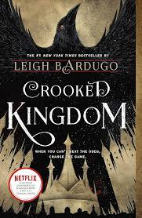
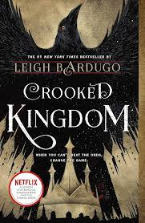

Ketterdam: a bustling hub of international trade where anything can be had for the right price—and no one knows that better than criminal prodigy Kaz Brekker. Kaz is offered a chance at a deadly heist that could make him rich beyond his wildest dreams. But he can’t pull it off alone. . . . A convict with a thirst for revenge A sharpshooter who can’t walk away from a wager A runaway with a privileged past A spy known as the Wraith A Heartrender using her magic to survive the slums A thief with a gift for unlikely escapes Six dangerous outcasts. One impossible heist. Kaz’s crew is the only thing that might stand between the world and destruction—if they don’t kill each other first.
By Leigh Burdugo
No Mourners
No Funerals
Book 1

Book 2

Welcome to the world of the Grisha.
Kaz Brekker and his crew of deadly outcasts have just pulled off a heist so daring even they didn't think they'd survive. But instead of divvying up a fat reward, they're right back to fighting for their lives.
Double-crossed and badly weakened, the crew is low on resources, allies, and hope. As powerful forces from around the world descend on Ketterdam to root out the secrets of the dangerous drug known as jurda parem, old rivals and new enemies emerge to challenge Kaz's cunning and test the team's fragile loyalties.
A war will be waged on the city's dark and twisting streets - a battle for revenge and redemption that will decide the fate of the Grisha world

Welcome to the world of the Grisha. Kaz Brekker and his crew of deadly outcasts have just pulled off a heist so daring even they didn't think they'd survive. But instead of divvying up a fat reward, they're right back to fighting for their lives. Double-crossed and badly weakened, the crew is low on resources, allies, and hope. As powerful forces from around the world descend on Ketterdam to root out the secrets of the dangerous drug known as jurda parem, old rivals and new enemies emerge to challenge Kaz's cunning and test the team's fragile loyalties. A war will be waged on the city's dark and twisting streets - a battle for revenge and redemption that will decide the fate of the Grisha world